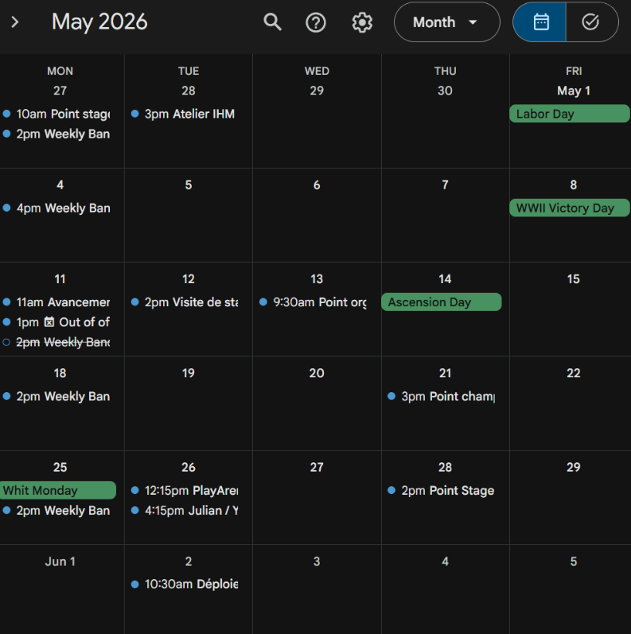
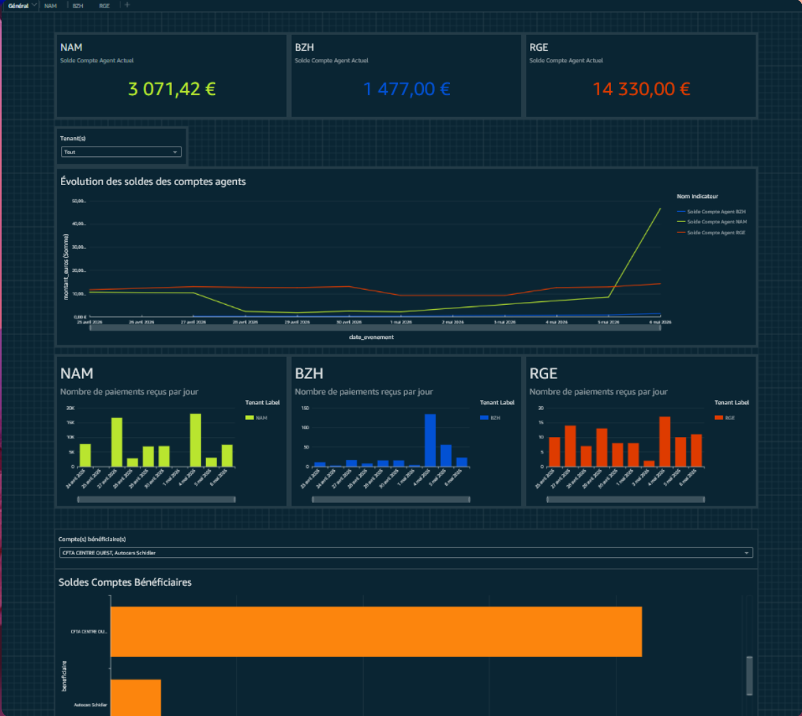

Intégration en entreprise
Cette section présente les compétences d'intégration professionnelle développées lors du stage, illustrées par des traces concrètes et évaluées dans un bilan réflexif.
Réunions et collaboration inter-équipes

Trace 6 : Extrait de l'agenda montrant les réunions de suivi hebdomadaires avec mon manager et les réunions techniques avec les autres développeurs.
Savoir-faire mobilisés
- 01 Participer activement à des réunions techniques et de suivi
- 02 Collaborer avec d'autres équipes pour résoudre des problèmes
- 03 Demander de l'aide de façon ciblée et mesurée
- 04 Communiquer efficacement avec des interlocuteurs de niveaux variés
Descriptif général
La Trace 6 montre les nombreuses interactions professionnelles qui ont rythmé le stage. Dès la semaine 1, j'ai participé à des réunions de suivi hebdomadaires avec mon manager Yannick Nya pour discuter de la mission, et à des réunions techniques pour débattre de l'architecture optimale et évaluer la difficulté de chaque tâche. Tout au long du stage, j'ai aussi collaboré avec d'autres équipes techniques pour résoudre des problèmes qui dépassaient le cadre de ma mission.
La communication et la collaboration ont été essentielles à chaque étape du projet, de la conception de l'architecture à la validation finale des dashboards QuickSight.
Descriptif des savoir-faire
01 Participer activement à des réunions techniques et de suivi
Dès la première semaine, j'ai participé à des réunions de suivi hebdomadaires d'une heure avec mon manager Yannick Nya. Ces réunions étaient l'occasion de faire le point sur l'avancement, de discuter des blocages éventuels, et de réfléchir à la suite. J'ai aussi participé à des réunions techniques avec d'autres développeurs pour débattre de l'architecture optimale et évaluer la difficulté de chaque tâche.
J'ai appris à présenter mes idées clairement, à argumenter mes choix techniques, et à écouter les retours pour ajuster ma direction. En semaine 7, j'ai organisé une réunion avec Bastien Durand, développeur en charge de la maintenance qui corrige les anomalies au quotidien, pour comprendre quels champs étaient importants dans les dashboards. Je l'ai contacté via la messagerie privée de l'entreprise (Blink). Nous avons discuté de la logique métier et de l'utilité de chaque colonne pour que j'aie une meilleure vision de la logique métier.
02 Collaborer avec d'autres équipes pour résoudre des problèmes
En semaine 5, j'ai dû contacter une autre équipe (l'équipe SysB, mais ce n'est pas pertinent de mentionner le nom) pour mettre à jour la base de test, bloquée à décembre 2025. C'est mon collègue qui a fait le contact. J'y ai passé une journée complète, avec des problèmes de documentation peu fournie. En semaine 6, la mise à jour de cette même base a cassé mon environnement, et mon collègue Aurélien Bak (développeur depuis longtemps dans la boîte qui a fait les CDK notamment) m'a aidé pendant deux jours à résoudre les conflits.
Aurélien m'a appris à comprendre les CDK et les bonnes manières de faire particulières à l'entreprise. Ces expériences m'ont montré que certains problèmes ne peuvent être résolus seul, et que la collaboration inter-équipes est obligatoire en entreprise.
03 Demander de l'aide de façon ciblée et mesurée
Avant le stage, j'étais déjà à l'aise pour demander de l'aide, organiser des réunions, et parler en public. J'ai donc pu mettre ces compétences à profit rapidement. J'ai appris à demander de l'aide après avoir essayé de résoudre le problème par moi-même, et de façon ciblée (en expliquant précisément ce que j'avais déjà tenté).
Mon manager m'a aussi appris qu'il ne faut pas imposer une nouvelle technologie dans un projet si l'équipe derrière ne peut pas la maintenir après mon départ : en étudiant la piste des Scheduled Queries, je me suis rendu compte que mes collègues ne connaissaient pas cet outil, et j'ai abandonné cette piste pour cette raison. C'est une forme de respect envers les collègues qui prendront le relais.
04 Communiquer efficacement avec des interlocuteurs de niveaux variés
J'ai dû communiquer avec des personnes ayant des niveaux techniques très différents : mon manager (Banking Project Manager), des développeurs expérimentés, et des utilisateurs finaux non techniques. En semaine 8, j'ai fait une réunion avec les futurs utilisateurs (mes managers et les futurs développeurs qui l'utiliseront) pour leur montrer les dashboards et prendre leurs retours.
Ils m'ont souligné qu'il manquait parfois des graphiques intéressants, ou encore des problèmes de design. Je l'ai corrigé par la suite. Adapter mon discours à chaque interlocuteur a été un apprentissage continu, même si j'étais déjà à l'aise avec la communication avant le stage.
Conception de dashboards orientés utilisateur

Trace 7 : Le dashboard QuickSight le plus compréhensible et esthétique, montrant le solde des comptes agents, le nombre de paiements reçus, et leur évolution dans le temps.
Savoir-faire mobilisés
- 01 Écouter les besoins des utilisateurs finaux
- 02 Concevoir un design lisible et fonctionnel
- 03 S'appuyer sur l'existant pour conserver la logique métier
- 04 Itérer sur le design en fonction des retours
Descriptif général
La Trace 7 montre le dashboard QuickSight le plus compréhensible et esthétique que j'ai conçu. Il indique le solde des comptes agents, le nombre de paiements reçus, et leur évolution dans le temps. Au total, j'ai créé trois dashboards en regroupant une vingtaine de contrôles différents par logique métier.
Les dashboards sont le livrable final du stage, l'outil qui sera utilisé quotidiennement par les équipes techniques pour détecter et corriger les anomalies de données.
Descriptif des savoir-faire
01 Écouter les besoins des utilisateurs finaux
En semaine 7, j'ai organisé une réunion avec Bastien Durand, développeur en charge de la maintenance qui corrige les anomalies au quotidien. On a discuté de la logique métier et de l'utilité de chaque colonne. Sans ses explications, j'aurais mis trop d'informations secondaires ou oublié des informations importantes.
Bastien m'a expliqué que l'historique était primordial pour son travail, et m'a aidé à identifier certains champs que j'avais mal jugés (soit inutiles alors qu'ils étaient importants, soit utiles alors qu'ils ne l'étaient pas). J'ai compris qu'on ne peut pas créer un bon tableau de bord tout seul : échanger avec l'utilisateur final est indispensable pour faire des graphiques qui ont du sens.
02 Concevoir un design lisible et fonctionnel
J'ai réalisé qu'un dashboard a beau contenir beaucoup de données utiles, si le design n'est pas propre, personne ne s'en servira. L'objectif final est que les informations recherchées soient faciles à trouver et visibles au premier regard. J'ai ajouté des filtres, séparé les visuels en créant une feuille par type de contrôle et par région, et harmonisé les couleurs.
Un collègue expert en QuickSight, Majid, m'a apporté son aide sur les standards graphiques de l'entreprise. Il m'a appris comment les filtres doivent être utilisés : par exemple, le même filtre ne doit pas apparaître plusieurs fois sur une feuille pour différents graphiques, sinon c'est désagréable pour l'utilisateur. Il m'a aussi expliqué qu'avoir plusieurs feuilles par analyse est une bonne chose pour structurer les différentes parties.
03 S'appuyer sur l'existant pour conserver la logique métier
J'ai repris le Google Sheet d'origine (où les résultats des requêtes étaient copiés à la main) pour comparer ses colonnes avec mes DataSets. Le Google Sheet avait 5 onglets, ils étaient déjà regroupés en partie. Il y avait trop de colonnes pour les citer toutes, mais tout y apparaissait, même certains champs inutiles ou vides.
Je me suis rendu compte que j'avais oublié des champs importants comme les ID de contrats bancaires (qui permettent de tracer l'erreur) et que j'en avais ajouté d'autres totalement inutiles comme le champ JIRA (un champ sensé être associé à une carte JIRA, c'est-à-dire un ticket de mission pour un autre groupe ou développeur). L'ancien système, même manuel, contenait toutes les règles accumulées avec le temps qu'il ne fallait pas sauter. J'ai fait au mieux pour conserver toute la logique métier, en la rendant beaucoup plus facile à analyser.
04 Itérer sur le design en fonction des retours
En semaine 8, j'ai fait une réunion avec les futurs utilisateurs pour leur montrer le résultat et prendre leurs retours. À la suite de ça et des remarques de mon manager, j'ai passé plus d'une journée complète à refaire tout le design pour que ce soit propre. Les problèmes identifiés étaient que les informations importantes n'étaient pas assez mises en valeur, et l'esthétique n'était pas assez travaillée, ce qui rendait le dashboard difficile à lire.
J'ai donc tout changé : couleurs, organisation, filtres, feuilles, typographie. Placer les filtres et les graphiques proprement, les ranger par région et harmoniser les couleurs sur QuickSight a pris beaucoup plus de temps que prévu, mais le résultat en valait la peine. Avant le stage, je n'avais jamais créé de dashboards, cette expérience m'a donc beaucoup appris sur l'importance de l'UX/UI.